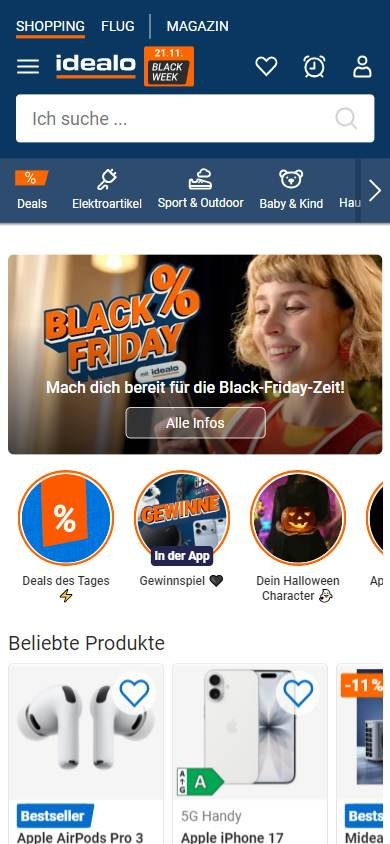
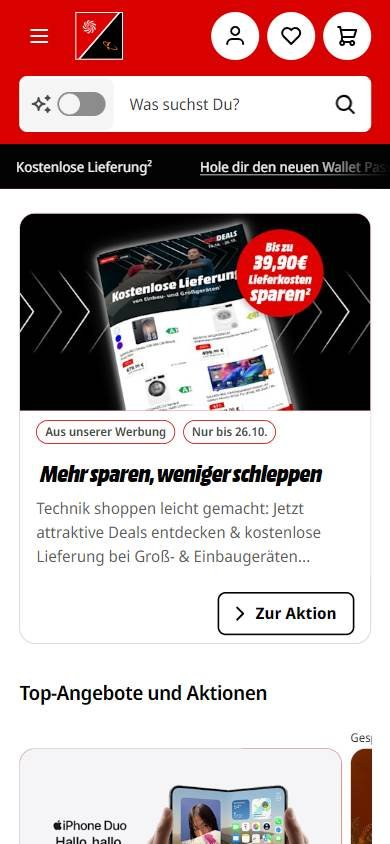
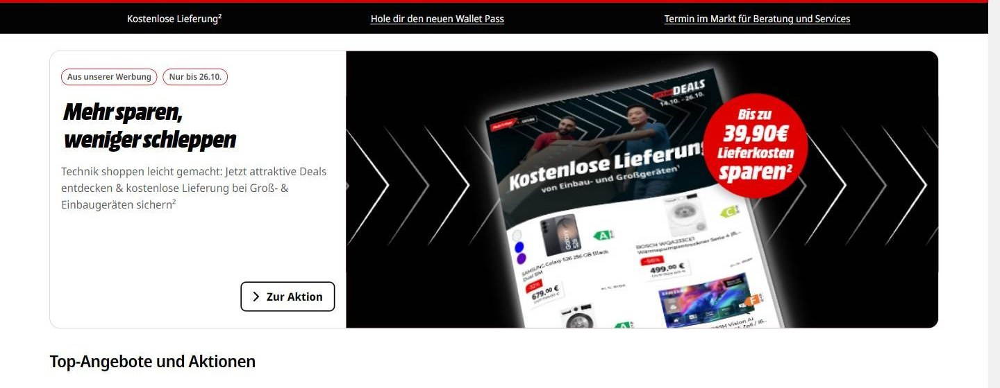

Tienda online que compite por buen precio
Los seleccionados
Los tres sitios más visitados de Alemania, según estadísticas de tráfico.
En resumen: lo que hacen los líderes
La pantalla de inicio de cada uno


Estilo visual
Colores, imágenes, tipografía y cuánta información muestran.
Tu estilo visual debería…
- Dos colores de marca y uno de acento para los precios; esquinas redondeadas.
Lo que tienen en común: Paletas acotadas de dos colores de marca, esquinas redondeadas y precios en un color de acento.
La paleta de cada uno
Medida sobre la primera pantalla. Los colores de marca salen del header; el resto muestra cuánto espacio ocupa cada color.
Así lo resuelve cada uno
Ficha comparativa
| Aspecto | Kleinanzeigen | idealo | MediaMarkt |
|---|---|---|---|
| Paleta | Acotada: blanco + verde lima | Acotada: azul oscuro + naranja | Acotada: rojo + negro + blanco |
| Imágenes | Fotos de avisos medianas | Fotos de producto sobre blanco + campaña | Foto de producto grande en el banner |
| DensidadIgual en todos | Media | Media | Media |
| EsquinasIgual en todos | Redondeadas | Redondeadas | Redondeadas |
Header
La franja de arriba con el logo y los accesos.
Tu header debería…
- Íconos con texto a la derecha (favoritos, cuenta, carrito).
- Si tenés tiendas físicas, mostrá «Mi tienda» en el header.
Lo que tienen en común: Logo a la izquierda y accesos con íconos y texto a la derecha; dos de tres usan el color de marca de fondo.
Así lo resuelve cada uno


Ficha comparativa
| Aspecto | Kleinanzeigen | idealo | MediaMarkt |
|---|---|---|---|
| Fondo | Blanco + franja verde lima | Azul oscuro de marca | Rojo de marca |
| Logo | A la izquierda | A la izquierda, con ícono de menú | A la izquierda |
| A la derecha | «Registrieren» y «Einloggen» (verde) | Favoritos, alerta de precio, «Anmelden» | Mi tienda, cuenta, favoritos y carrito (íconos en círculo) |
Buscador
La barra para buscar.
Tu buscador debería…
- Texto de ayuda en segunda persona («¿Qué estás buscando?»).
- Si vendés por zona, sumá la ubicación dentro del buscador.
Lo que tienen en común: Buscador blanco con texto en segunda persona («¿Qué estás buscando?»).
Así lo resuelve cada uno

Ficha comparativa
| Aspecto | Kleinanzeigen | idealo | MediaMarkt |
|---|---|---|---|
| Tamaño | Protagonista, con filtros | Mediano, en el header | Protagonista |
| Estilo | Blanco sobre franja verde, con categoría y ubicación | Blanco, esquinas apenas redondeadas | Blanco redondeado, con búsqueda con IA |
| Texto de ayuda | «Was suchst du?» | «Ich suche…» | «Was suchst Du?» |
Menú y categorías
Cómo se organizan las secciones.
Tu menú y categorías debería…
- Categorías en una fila con ícono y nombre corto.
Lo que tienen en común: Las categorías van en una fila debajo del buscador, con íconos o en negrita.
Así lo resuelve cada uno


Ficha comparativa
| Aspecto | Kleinanzeigen | idealo | MediaMarkt |
|---|---|---|---|
| Formato | Fila de categorías con íconos | Fila de categorías con íconos sobre azul | Botón «Menü» + categorías en negrita |
Primera pantalla
Lo primero que se ve debajo del header.
Tu primera pantalla debería…
- Precio visible desde la primera pantalla, en un color de acento.
Lo que tienen en común: Productos o avisos con foto y precio en la primera pantalla, o un banner con la promo y el precio en una insignia.
Así lo resuelve cada uno

Ficha comparativa
| Aspecto | Kleinanzeigen | idealo | MediaMarkt |
|---|---|---|---|
| Formato | Galería de avisos con foto y precio | Círculos de ofertas + productos + banner de campaña | Banner promocional grande con titular y botón |
| Precio | Sí, en verde | Sí, en naranja («ab 207,90 €») | Sí, en insignia roja |